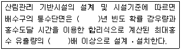

산림기사 (2012-03-04 기출문제)
1과목: 조림학
1. 우리나라 조림 수종 중 도입 수종은?
- 잎갈나무
- 잣나무
- 소나무
- 사방오리나무
(정답률: 72%)

2. 산림기후대에 대한 설명으로 옳은 것은?
- 우리나라의 남한 지역에는 한대림이 전혀 없다.
- 난대림의 주요 특징 수종으로 가시나무를 들 수 있다.
- 지중해 연안 지역의 산림은 우리나라 온대 북부의 산림 구성과 유사하다.
- 열대림은 넓은 지역에 걸쳐 단일 수종으로 단순림을 구성할 때가 많다.
(정답률: 79%)
3. 다음 수종 중에서 토양수분 요구도가 가장 높은 수종은?
- 편백
- 신갈나무
- 삼나무
- 소나무
(정답률: 57%)
4. 산림 갱신법의 종류를 분류하는데 그 기준이 되지 못하는 것은?
- 임분조성의 기원
- 벌채종
- 벌구의 크기
- 방위
(정답률: 77%)
5. 조림용 묘목의 규격의 최소기준으로 바른 것은?
- 낙엽송 1-1묘 : 간장 35cm 이상, 근원직경 6mm 이상
- 잣나무 2-1묘 : 간장 25cm 이상, 근원직경 6mm 이상
- 리기다소나무 1-1묘 : 간장 40cm 이상, 근원직경 7mm 이상
- 은행나무 2-0묘 : 간장 60cm 이상, 근원직경 7mm 이상
(정답률: 54%)
6. 총광합성량을 A, 호흡량을 R, 물질 순생산량을 N이라고 할 때, 이들 간의 관계식을 바르게 나타낸 것은?
- A + R = N
- A + N = R
- R × A = N
- A - R = N
(정답률: 72%)
7. 간벌의 목적에 대한 설명으로 옳은 것은?
- 최종 생산될 목재의 형질을 개선한다.
- 자연낙지를 유도하여 지하고를 높인다.
- 잔족목의 수고생장을 크게 촉진한다.
- 줄기에 발생하는 부정아를 감소시킨다.
(정답률: 80%)
8. 가지치기의 효과가 아닌 것은?
- 옹이 없는 무절재 생산
- 줄기 하부의 직경생장 촉진
- 줄기의 완만도 조절
- 하층목의 보호 및 생존경쟁의 완화
(정답률: 50%)
9. 식재밀도에 대한 설명 중 밀식의 장점이 아닌 것은?
- 밀식 임분은 줄기는 가늘지만 근계발달이 좋아 풍해 및 설해 등을 입지 않는다.
- 수관의 물폐가 빨리 와서 표토의 침식과 건조를 방지하여 개벌에 의한 지력의 감퇴를 줄일 수 있다.
- 제벌 및 간벌에 있어서 선목의 여유가 있으므로 우량임분으로 유도할 수 있다.
- 간벌수입이 기대된다.
(정답률: 66%)
10. 일반적으로 수목의 기관 중 인산의 함량이 가장 많은 기관은?
- 줄기
- 가지
- 뿌리
- 잎
(정답률: 65%)
11. 종자의 생리적 휴면을 유지시키는 호르몬은?
- 옥신(auxin)
- 지베렐린(gibberellin)
- 사이토키닌(cytokinin)
- 아브시스산(abscisic acid)
(정답률: 70%)
12. 종자의 품질을 나타내는 기준인 순량율이 50%, 실중이 60g, 발아율이 90%라고 할 때, 종자의 효율은?
- 27%
- 30%
- 45%
- 54%
(정답률: 77%)
13. 개화한 다음해 가을에 종자가 성숙하는 수종은?
- 떡갈나무
- 상수리나무
- 신갈나무
- 졸참나무
(정답률: 67%)
14. 버드나무류나 사시나무류의 경우 종자채취 후 바로 파종(채파)하는 이유는?
- 종자의 크기가 작기 때문
- 배유가 작은 종자로 수명이 짧기 때문
- 종자가 바람에 잘 흩어지기 때문
- 종자의 발아력이 높기 때문
(정답률: 81%)
15. 파종상에 짚덮기를 하는 이유로 옳지 않은 것은?
- 약제살포의 효과를 증대시킨다.
- 파종상의 습도를 높여 발아를 촉진시킨다.
- 잡초발생을 억제한다.
- 빗물로 인한 흙과 종자의 유실을 막는다.
(정답률: 80%)
16. 산불 시 가장 잃기 쉬운 양분으로 산불 난 지역의 조림 시 부족하기 쉬운 토양 양분은?
- 질소
- 인산
- 칼륨
- 칼슘
(정답률: 74%)
17. 윤벌기가 완료되기 전에 갱신이 완료되는 전갱작업에 해당되는 것은?
- 모수작업
- 개벌작업
- 산벌작업
- 택벌작업
(정답률: 61%)
18. 발아할 때 자엽이 땅속에 남아 있는 자엽지하위발아 수종으로 짝지어진 것은?
- 소나무, 잣나무
- 밤나무, 호두나무
- 단풍나무, 싸리나무
- 물푸레나무, 해송
(정답률: 76%)
19. 조림지의 풀베기 작업에 대하여 바르게 설명하고 있는 것은?
- 둘레베기는 소요 노동력을 크게 증가시킨다.
- 호두나무를 소식한 조림지는 모두베기를 하여 임지 하부를 깨끗이 정리한다.
- 낙엽송 조림지의 풀베기 작업은 식재 후 3~4년간 계속 하는 것이 보통이다.
- 줄베기 작업은 묘목을 식재한 줄과 줄사이에 자라는 풀과 잡목 및 관목을 제거하는 작업이다.
(정답률: 50%)
20. 토양의 무기양료에 대한 요구도가 낮은 수종으로 짝지어진 것은?
- 아까시나무, 느티나무
- 리기다소나무, 오동나무
- 오리나무, 노간주나무
- 낙엽송, 느릅나무
(정답률: 54%)
2과목: 산림보호학
21. 다음 중 Septoria류에 의한 병을 잘못 설명한 것은?
- 주로 잎에 작은 점무늬를 형성한다.
- 자작나무갈색점무늬병(갈반병)을 예로 들 수 있다.
- 병원균은 병든 잎에서 월동하여 1차 전염원이 된다.
- 병원균의 분생포자는 주로 곤충에 의해 전반된다.
(정답률: 61%)
22. 밤나무 뿌리혹병(根頭腫病)균의 주요 침입부위는?
- 상처
- 잎
- 기공
- 피목
(정답률: 73%)
23. 수병의 예방방법 중 묘포지에서 2~3년간 윤작을 함으로써 피해를 크게 경감시킬 수 있는 병은?
- 침엽수의 모잘록병
- 흰비단병
- 자줏빛날개무늬병
- 오동나무 탄저병
(정답률: 56%)
24. 약제를 식물체의 뿌리, 줄기, 잎 등에서 흡수시켜 식물체 내의 전체에 약제가 분포되게 하여 해충이 섭식하였을 경우에 약효가 발휘되는 살충제의 종류는?
- 침투성 살충제
- 접촉성 살충제
- 소화중독성 살충제
- 유인성 살충제
(정답률: 68%)
25. 하늘소 중에서 똥을 밖으로 배출하지 않아 발견하기 어려운 해충은?
- 알락하늘소
- 뽕나무하늘소
- 향나무하늘소
- 솔수염하늘소
(정답률: 66%)
26. 미국흰불나방은 북아메리카가 원산지이다. 우리나라에 최초로 피해를 나타낸 시기는?
- 1948년 전후
- 1958년 전후
- 1968년 전후
- 1978년 전후
(정답률: 68%)
27. 성비(sex ratio) 가 0.65인 곤충이 있다고 할 때 암·수 전체 개체수가 200마리라면 암컷은 몇 마리인가?
- 65마리
- 70마리
- 100마리
- 130마리
(정답률: 73%)
28. 다음 중 파이토플라스마에 의한 질병이 아닌 것은?
- 벚나무 빗자루병
- 오동나무 빗자루병
- 대추나무 빗자루병
- 뽕나무 오갈병
(정답률: 79%)
29. 수목의 그을음병에 대한 설명 중 바르지 않은 것은?
- 자낭균에 의한 수목병이다.
- 흡즙성 곤충을 방제하면 된다.
- 탄소동화작용을 방해하는 외부착생균이 대부분을 차지한다.
- 질소질 비료를 충분히 준다.
(정답률: 78%)
30. 산립해충의 화학적 방제시 살충제의 과다한 사용에 대한 문제점으로 볼 수 없는 것은?
- 약제저항성의 유발
- 효과가 느리지만 정확
- 생태계의 단순화
- 환경에 대한 부작용
(정답률: 80%)
31. 조수(鳥獸)에 의한 산림 피해를 설명한 것 중 잘못된 것은?
- 조류의 산림에 대한 관계는 매우 복잡하여 익해(益害)를 구별하기가 어렵지만 대개 유익한 것이 많다.
- 조류를 보호하는 데는 법률에 의한 보호와 인위적 수단에 의한 증식이 있다.
- 산림의 피해는 소형동물보다는 몸집이 큰 대형동물에 의한 피해가 많다.
- 수류(獸類)의 피해는 4계절 중 먹이가 부족한 겨울에 가장 많다.
(정답률: 77%)
32. 다음 중 오동나무 빗자루병에 매개충인 담배장님노린재의 구제 시기는?
- 2월~3월
- 4월~6월
- 7월~9월
- 10월~11월
(정답률: 66%)
33. 다음 중 수동(樹洞)형 영소조류에 속하지 않는 것은?
- 백로류
- 박새류
- 딱따구리류
- 부엉이류
(정답률: 59%)
34. 다음 산불의 발생원인 가운데 가장 발생비율이 높은 것은?
- 성묘객의 실화
- 논, 밭두렁 소각
- 어린이 불장난
- 자연발생
(정답률: 41%)
35. 모잘록병(dampoing-off)의 발병 환경으로 옳은 것은?
- 토양의 물리적 성질과 발병과는 전혀 상관관계가 없다.
- 질소질 비료를 충분히 준 묘목은 발병률이 낮다.
- 소나무류 묘목의 모잘록병은 겨울철에 발생이 심하다.
- 토양이 너무 과습하지 않게 배수관리를 잘해주는 것도 발병률을 낮출 수 있는 방제방법이다.
(정답률: 73%)
36. 측백나무 검은돌기잎마름병에 대한 설명이다. 틀린것은?
- 가을에 발생하는 낙엽성 병해이다.
- 주로 수관하부의 잎이 떨어져서 엉성한 모습으로 된다.
- 통풍이 나쁠 때 많이 발생한다.
- 잎의 기공조선상(氣孔條線上)에 병원체의 자실체가 나타난다.
(정답률: 46%)
37. 수병의 발생에 관여하는 3대 요소가 아닌 것은?
- 병원체
- 기주식물
- 기생식물
- 환경
(정답률: 63%)
38. 다음 중 2차 해충에 속하는 것은?
- 소나무좀
- 오리나무잎벌레
- 흰불나방
- 밤나무혹벌
(정답률: 62%)
39. 여름포자세대(夏胞子世代)를 가지고 있지 않는 병원균은?
- 잣나무 털녹병균
- 포플러 잎녹병균
- 향나무 녹병균
- 소나무 혹병균
(정답률: 60%)
40. 밤나무흑벌의 월동형태는?
- 알
- 유충
- 성충
- 번데기
(정답률: 60%)
3과목: 임업경영학
41. 임분밀도의 척도로 사용하지 않는 것은?
- 흉고단면적
- 단위면적당 임목본수
- 수관경쟁인자
- 토양의 등급
(정답률: 75%)
42. 투자효율의 결정방법 중 화폐의 시간적 가치를 고려하여 투자효율을 분석하는 방법이 아닌 것은?
- 순현재가치법
- 회수기간법
- 수익·비용률법
- 내부투자수익률법
(정답률: 52%)
43. 산림을 국유림, 공유림, 사유림의 3가지로 구분할 때 공유림의 경영목적에 해당하지 않는 것은?
- 공공복지 증진
- 지방재정 수입의 확보
- 사유림 경영의 시범
- 재산유지 및 묘지 확보
(정답률: 72%)
44. 산림이 가지고 있는 기능 중에서 제 1차 기능 혹은 직접 기능이 아닌 것은?
- 목재 생산
- 부산물 생산
- 산림 휴양
- 산림의 경제적 기능
(정답률: 49%)
45. 다음 임업경영의 분석에 대한 공식으로 옳지 않은 것은?
- 임업의존도(%)=(임업소득/임가소득)*100
- 임업소득 가계충족율(%)=(임업소득/가계비)*100
- 임업소득률(%)=(임업소득/임업자본)*100
- 자본수익률(%)=(순수익/자본)*100
(정답률: 51%)
46. 다음 중에서 야영지의 자원조건으로 가장 적절하지 못한 곳은?
- 음용수로 적합한 물이 존재할 것
- 경사가 완만한 하천변 토지
- 배수가 잘되는 장소
- 통풍이 잘되면서 수목에 의해 적당한 그늘이 진 곳
(정답률: 70%)
47. 산림조사 방법 중에서 전수조사 방법에 포함되는 것은?
- 단순임의 추출법
- 매목조사법
- 층화추출법
- 계통적 추출법
(정답률: 70%)
48. 복합적 임업경영의 형태 중에서 임목이 울폐되기전 일정 기간 동안 산림 내에 가축을 방목하여 임지의 야생초를 이용하게 하는 방법은?
- 농지임업
- 부산물임업
- 수예적임업
- 흔목임업
(정답률: 61%)
49. 육림비에 대한 설명으로 틀린 것은?
- 일반적으로 육림비 중 가장 많은 비중을 차지하는 것은 이자이다.
- 육림비를 절감할 수 있는 최선의 방법은 노동비를 절약하는 것이다.
- 육림비 중 고정재비에는 종자, 묘목, 거름, 농약 등이 포함된다.
- 육림비는 노동비, 직접재료비, 공동재료비, 지대, 감가상각비, 이자 등으로 구성된다.
(정답률: 66%)
50. 휴양림의 화장실 최소 이용객수가 800명, 최대 이용객수가 8000명, 이용률이 1/80, 그리고 단위면적이 3.3m2일 경우에 화장실의 소요 공간규모는?
- 50m2
- 130m2
- 270m2
- 330m2
(정답률: 52%)
51. 개별원가계산 방법의 설명으로 옳은 것은?
- 공정별 원가계산방법이라고도 한다.
- 제품의 원가를 개개의 제품단위별로 직접 계산하는 방법이다.
- 같은 종류와 규격의 제품이 연속적으로 생산되는 경우에 사용한다.
- 생산된 제품의 전체원가를 총생산량으로 나누어서 단위원가를 산출한다.
(정답률: 68%)
52. 다음 휴양자원에 대한 설명 중 틀린 것은?
- 휴양자원은 동적 ㆍ 기능적이어야 한다.
- 휴양자원은 물리적일뿐 아니라 사회적 요구에 부합하여야 한다.
- 휴양자원은 생물 ㆍ 물리학적 자원으로 인공적인 환경요소는 배제된다.
- 휴양자원의 소유패턴은 사적 ㆍ 상업적으로부터 공공소유와 관리에 이르는 다양한 패턴이다.
(정답률: 72%)
53. 휴양림 내 놀이시설이 그 사용자에게 주는 가치중 가장 거리가 먼 것은?
- 사회적 가치
- 정서적 가치
- 생리적 가치
- 예술적 가치
(정답률: 58%)
54. 수간석해(樹幹析解)를 통해 총 재적을 구할 때 합산하지 않아도 되는 것은?
- 근주재적
- 결정간재적
- 지조재적
- 초단부재적
(정답률: 70%)
55. 휴양림을 조성하는데 고려할 특성 중 가장 중요성이 낮은 것은?
- 기능성
- 입지성
- 경관자원특성
- 오락성
(정답률: 77%)
56. 임지평가 방법에 대한 설명으로 맞지 않은 것은?
- 환원가법은 연년수입의 후가합계에 의한다.
- 기망가법은 장래에 기대되는 수입의 전가합계에 의 한다.
- 비용가법은 취득원가의 복리합계액에 의한다.
- 원가방법은 재조달원가의 단순합계액에 의한다.
(정답률: 36%)
57. 다음 중 활동중심형 휴양 형태는?
- 원생지 휴양활동
- 운동경기 관람 활동
- 야영 활동
- 등산 활동
(정답률: 47%)
58. 다음 지역 중에서 지방자치단체의 장, 지방산림청장, 국립자연휴양림관리소장이 『산림문화 ㆍ 휴양에 관한 법률』에 의거하여 선발한 등산안내인을 활동하게 할 수 있는 지역으로 가장 적절하지 않은 곳은?
- 자연휴양림에 속한 등산로
- 산림욕장에 속한 등산로
- 산림욕장 인근의 등산로
- 수목원
(정답률: 65%)
59. 10년생의 산림면적이 200ha, 20년생의 산림면적이 350ha, 40년생의 산림면적이 450ha일 때 이 산림의 면적령을 구하면?
- 17년
- 27년
- 37년
- 47년
(정답률: 55%)
60. 통나무의 수피를 제외한 말구의 최소직경이 16cm 이고, 최소직경에 대한 직각의 직경이 24cm일 때 우리나라 검척법에 의한 이 통나무의 말구직경은?
- 16cm
- 17cm
- 18cm
- 20cm
(정답률: 47%)
4과목: 임도공학
61. 성토사면의 안정을 도모하기 위하여 사면 끝에 설치하는 공작물이 아닌 것은?
- 옹벽
- 돌기슭막이
- 견치석쌓기
- 줄떼공
(정답률: 53%)
62. 가장 일반적으로 이용되는 다각측량의 각 관측방법으로 임도곡선 설정 시 현지에서 측점을 설치하는 곡선설정 방법은?
- 교각법
- 편각법
- 진출법
- 방위각법
(정답률: 66%)
63. 임도의 설계기준에 대한 설명으로 잘못된 것은?
- 평면도는 축척 1/1200으로 한다.
- 평면도에는 임시기표, 교각점, 측점번호, 사유토지의 경계, 구조물의 위치 및 규격 등을 기입한다.
- 횡단면도의 축척은 1/1000로 한다.
- 횡단기입의 순서는 좌측하단에서 상단방향으로 한다.
(정답률: 67%)
64. 다음 중 바퀴식 트랙터와 비교한 크롤러식 트랙터에 대해 바르게 설명한 것은?
- 접지압이 크다.
- 가격 및 유지비가 낮다.
- 완경사지에서 많이 사용한다.
- 주행속도가 낮다.
(정답률: 56%)
65. 우리나라의 자침편차 중 옳은 것은?
- 동편차 : 5° ~ 7°
- 서편차 : 5° ~ 7°
- 서편차 : 1° ~ 3°
- 동편차 : 1° ~ 3°
(정답률: 55%)
66. 1/50000 지형도에서 양각기 계획법으로 임도망을 편성하고자 한다. 종단물매를 5%로 계획할 때 도상거리는 얼마인가? (단, 등고선 간격은 20m 이다.)
- 4mm
- 6mm
- 8mm
- 10mm
(정답률: 52%)
67. 다음 중 ( )안에 해당되는 것은?

- 70, 0.8
- 90, 1.0
- 100, 1.2
- 120, 1.5
(정답률: 80%)
68. 다음 중 사면붕괴 및 사면침식 등 비탈면의 유지 관리를 위한 표면유수 유입방지용 배수시설은?
- 맹거
- 종배수구
- 횡배수구
- 산마루 측구
(정답률: 55%)
69. Matthews 이론에 따라 적정임도밀도를 산출할 때 고려하는 요인이 아닌 것은?
- 횡단물매
- 집재비
- 임도우회계수
- 생산예정재적
(정답률: 31%)
70. 임도시공시 굴착된 흙을 운반할 때 도로너비 2.5m 정도 이상에서 운반거리 60m를 초과하는 경우에 적합한 장비는?
- 트레일러(trailer)
- 불도저(bull dozer)
- 덤프트럭(dump truck)
- 모터그레이더(moter grader)
(정답률: 71%)
71. 다음 중 수준측량시 발생하는 정오차에 포함되지 않는 것은?
- 지구의 곡률에 의한 오차(구차)
- 온도변화에 의한 표척의 신축
- 기포관의 둔감
- 광선의 굴절(기차)
(정답률: 59%)
72. 다음 중 전압(轉壓)기계가 아닌 것은?
- 탠덤 롤러
- 타이어 롤러
- 진동 롤러
- 모터 그레이더
(정답률: 73%)
73. 우리나라 임도관련 규정에 제시된 절토사면의 기울기 설계기준은?
- 경암 1:0.3~0.8, 토사지역 1:0.8~1.5
- 경암 1:0.5~0.8, 토사지역 1:0.8~1.5
- 암석지 1:0.6~1.2, 토사지역 1:0.3~0.8
- 암석지 1:0.8~1.5, 토사지역 1:0.3~0.8
(정답률: 63%)
74. 임도시공용 기계의 운전관리 및 안전대책에 관한 내용 중 틀린 것은?
- 기계의 계획 및 관리 전반에 대한 관련 법규를 충분히 이해할 필요가 있다.
- 작업능률을 높이고 시공단가 절감을 위한 우수한 오퍼레이터를 확보 운용해야 한다.
- 기계의 윤활관리(潤滑管理)는 예방정비와는 무관한 작업이다.
- 오퍼레이터는 연속하여 중작업(重作業)에 종사하기 때문에 충분하고 적절한 인간관계 및 관리가 필요하다.
(정답률: 81%)
75. 경사지 임도의 횡단선형을 구성하는 요소가 아닌 것은?
- 차도나비
- 노반
- 길어깨
- 옆도랑
(정답률: 64%)
76. 모르타르뿜어붙이기공법에서 건조 ㆍ 수축으로 인한 균열을 방지하는 방법이 아닌 것은?
- 물 ㆍ 시멘트의 비율을 적게 한다.
- 응결완화제를 사용한다.
- 뿜는 두께를 증가 시킨다.
- 사용하는 시멘트의 양을 적게 한다.
(정답률: 58%)
77. 임도 설계시 주행속도 40km/시간, 오름물매 4%, 내림물매 2% 일 때 종곡선의 길이는?
- 약 6.8m
- 약 7.9m
- 약 8.9m
- 약 9.9m
(정답률: 37%)
78. 임도 안전점검을 위해 비탈면상 두 점 A, B를 실측하니 50m 이었고, 두 점의 수평거리를 계산하니 40m 이었다. B점의 높이는 얼마인가? (단, A점의 표고는 0m 이다.)
- 10m
- 25m
- 30m
- 35m
(정답률: 42%)
79. 임도의 횡단선형에 대한 설명으로 틀린 것은?
- 임도의 너비는 유효너비와 도로어깨 및 옆도랑의 너비를 합한 것이다.
- 길어깨는 유효너비의 양측에 설치한다.
- 길어깨는 도로의 유지, 고장차와 통행인의 대피 및 도로표시를 설치하는데 이용된다.
- 임도의 횡단경사는 포장한 노면의 경우에는 1.5~2%가 적당하다.
(정답률: 63%)
80. 임도의 종단물매와 관련성이 가장 적은 요인은 어느 것인가?
- 곡선반지름
- 설계속도
- 안전시거
- 우회율
(정답률: 43%)
5과목: 사방공학
81. 해풍에 의한 비사를 억류하고 퇴적시켜서 모래언덕을 조성할 목적으로 시공하는 것은?
- 퇴사울세우기
- 정사울세우기
- 모래막이
- 모래덮기
(정답률: 76%)
82. 보수력이 높은 토양은 임도노면의 토양으로 적합하지 않다. 아래 토양 중 일정 기압의 힘으로 보유되는 수분함량이 가장 높은 토양은?
- 식토
- 미사토
- 양토
- 사질토
(정답률: 58%)
83. 뒷길이가 35cm인 견치석을 쌓는다면 m2당 몇 개가 필요한가? (단, 치수가 25cm(25×25)이다.)
- 13개
- 16개
- 20개
- 24개
(정답률: 54%)
84. 비탈면 안정토목공법에 해당하는 것은?
- 비탈 힘줄박기 공법
- 종자 분사 파종 공법
- 거적덮기 공법
- 종비토뿜어붙이기 공법
(정답률: 76%)
85. 다음 중 휴양활동으로 인한 임지피해에 대한 설명으로서 잘못된 것은?
- 휴양이용에 따른 가시적이고 부정적인 영향은 토양 답압이다.
- 답압은 토양공극을 감소시켜 공기를 차단하므로 토양수분이 일탈하지 못하도록 하며 임지를 습윤하게 유지할 수 있는 장점이 있다.
- 답압을 통해 많은 공극이 제거되어 토양은 입단구조가 깨지게 된다.
- 답압된 토양 속으로는 물이 침투되지 않아 유거수가 증가하여 표면침식이 증가한다.
(정답률: 73%)
86. 다음 중 사방댐을 직선부에 계획할 때 올바른 방향은?
- 유심선에 직각
- 유심선에 평형
- 유심선의 절선에 직각
- 유심선의 절선에 평행
(정답률: 69%)
87. 사방댐의 주요 기능으로 가장 거리가 먼 것은?
- 계상물매를 완화하고 종침식을 방지
- 산각을 고정하여 사면 붕괴를 방지
- 계상에 퇴적한 불안정한 토사의 유동을 방지
- 물을 가두어 물놀이장이나 수원지로 이용
(정답률: 79%)
88. 평균유속(V)와 임계유속(Vg)가 같을 경우에 대한 설명으로 옳은 것은?
- 계상에 침식이 가장 많이 일어난다.
- 유수의 속도가 가장 높다.
- 유수가 사력(砂礫)으로 포화된 상태이다.
- 계수에 아무런 영향을 미치지 않는다.
(정답률: 47%)
89. 다음 중 조도계수가 가장 큰 수로는?
- 시멘트 바닥수로
- 야면석수로
- 흙수로
- 큰 자갈과 수초가 많은 불량한 수로
(정답률: 68%)
90. 다음 중 산사태의 발생요인 중 내적 요인에 해당하는 것은?
- 토질
- 강우
- 지진
- 벌목
(정답률: 67%)
91. 재래 초본류(향토식물)와 외래 초본류를 혼파할 때 다음 중 재래 초본류에 해당하는 것은?
- 우산잔디
- 나도김의털
- 갈풀
- 비수리
(정답률: 43%)
92. 유역면적 1ha, 최대 시우량 100mm/hr 일 때 시우량법에 의한 계획지점에서의 최대홍수유량은? (단, 유거계수(K)는 0.7로 한다.)
- 0.166m3/s
- 0.194m3/s
- 1.17m3/s
- 1.94m3/s
(정답률: 64%)
93. 비탈녹화공법에 사용되는 외래초종의 특성으로 틀린 것은?
- 초기발아가 우수하다.
- 여름철 병해충에 강하다.
- 고온에 약하다.
- 주변 식생과 이질적이다.
(정답률: 46%)
94. 설상사구에 대한 설명이 아닌 것은?
- 바람의 힘이 약화된 곳에서 형성된다.
- 혀 모양의 형태로 모래가 쌓인 것을 말한다.
- 치올린 언덕의 모래가 비산하여 내륙으로 이동되면서 형성된다.
- 모래가 정선부에 퇴적하여 얕은 모래 독을 형성한다.
(정답률: 42%)
95. 절토사면의 토질별 적용공법으로 가장 적합하게 연결된 것은?
- 모래층 비탈면 - 부분 객토 식생공법
- 점질성 비탈면 - 분사파종공법
- 경암 비탈면 - 낙석 방지막 덮기 공법
- 사질토 비탈면 - 새집붙이기공법
(정답률: 62%)
96. 강우시의 침투능에 대한 설명으로 틀린 것은?
- 초지보다 산림지의 침투능이 크다.
- 나지보다 벌채적지의 침투능이 더 크다.
- 강우시간이 지속됨에 다라 점점 더 커진다.
- 토양이 건조해 있는 강우초기에 더 크다.
(정답률: 59%)
97. 해안사방에서 사초(砂草)심기공법의 사초 식재방법이 아닌 것은?
- 점심기
- 줄심기
- 망심기
- 다발심기
(정답률: 54%)
98. 임목수확작업시스템 중 전목재생산방식(full-tree harvesting method)의 설명으로 맞지 않는 것은?
- 임분내에 벌도된 임목을 가지가 붙은 채 스키더나 케이블크레인으로 끌어낸다.
- 끌어낸 임목은 임도변이나 토장에서 가지치기와 통나무 자르기를 하며 이 때 하베스터를 이용하는 것이 가장 효과적이다.
- 벌도대상 임분 밖에서 가지치기, 초두부제거 등이 이루어져 임내 양료의 순환에 악영향을 끼친다.
- 임목규격이 크면 대형장비가 필요하다.
(정답률: 45%)
99. 다음 수로 중 기울기가 완만하고 수량이 적으며 토사유속이 적은 곳에 설치하는 수로는?
- 떼붙임수로
- 돌붙임수로
- 메붙임수로
- 콘크리트수로
(정답률: 71%)
100. 다음 중 정사울세우기를 가장 잘 설명한 것은?
- 비탈면 경사를 정렬하기 위하여 볏짚, 보리짚, 갈대섶, 억새류 등을 설치한 것
- 산지비탈면에 1급에서 9급까지 선떼붙이기 한 것
- 해안지역의 모래를 안정하여 식재목을 조성한 것
- 암벽 비탈면의 침식방지를 위한 울타리를 설치한 것
(정답률: 73%)